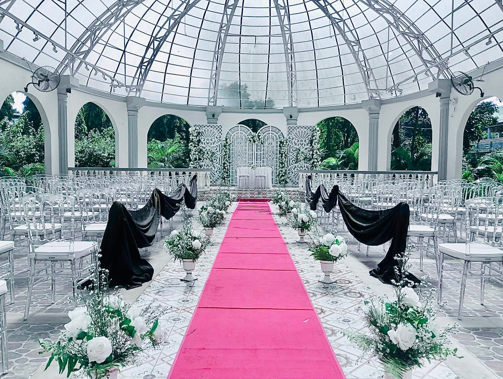

The table.
CATERINGMake the meal part of the memory. Share your guest count, menu preferences and dietary requests, then ask for the current menu and a proposal for your occasion.
For the people you love.
For the day you’ll keep coming back to.

That first look at the room. The table where everyone gathers. A celebration that feels like the people at its heart.
ZION brings together catering, event styling, and planning conversations to help shape your occasion. Start with what matters to you. Build the details from there.
Explore what we can plan ↗Make the meal part of the memory. Share your guest count, menu preferences and dietary requests, then ask for the current menu and a proposal for your occasion.
From a floral ceremony to a playful celebration backdrop, explore a direction that feels like you. Discuss the palette, focal points and venue details with the team.
Talk through the room, the schedule and the moments that matter. ZION’s published planning work includes ocular visits, layouts and timeline discussions.
Services and inclusions are agreed in your event proposal. Venue hire, suppliers, equipment and exact menus should be confirmed individually.
Let a detail catch your eye.
Save it as inspiration for your own event.
Images show past event work and details. Exact setups, materials, venues and suppliers are subject to a new proposal.
Visit the original album ↗Some beginnings are grand. Some gatherings are simply close to home. Tell us what this day means to you.
The venue, the guest list, the menu, the styling—each choice changes the plan. Share a starting brief and ask ZION for current options and an itemized quote.
Share your occasion, date, venue, guest count and the feeling you have in mind.
Discuss menus, styling, layout and timeline needs. Confirm the team’s proposed scope.
Review availability, final inclusions, charges, reservation requirements and written terms.
Your ideas don’t need to be complete.
A place to start is enough.
The public page lists weddings, debuts, birthdays, anniversaries, meetings and team gatherings. Recent posts also feature family and company celebrations. Share your event type to discuss the right scope.
Use the service choices in your brief to show what interests you. Ask the team which standalone services or combinations are available for your date and venue.
Ask ZION directly for the current menu, package inclusions, minimum guest count and an itemized proposal. Final pricing depends on the agreed event scope; no unverified price list is presented here.
Yes—save a portfolio image to add its title and original source link to your inquiry. Discuss what you like about it. Exact flowers, decor, materials and venue arrangements must be confirmed in your proposal.
Include dietary preferences and allergy questions in your brief. Ask the team to confirm what can be accommodated and the relevant food-preparation arrangements before making a decision.
Contact the official Facebook page or email zionmemories@gmail.com. Confirm availability, final charges, payment instructions, reservation requirements and cancellation or rescheduling terms directly with ZION.